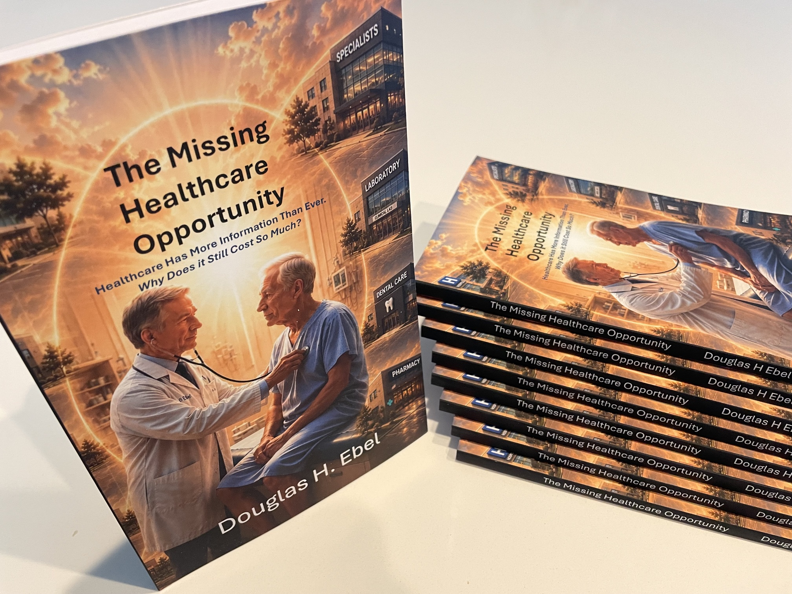

The Missing Healthcare Opportunity
Healthcare Has More Information Than Ever.
Why Does It Still Cost So Much?
Healthcare does not suffer from a lack of information. The challenge is bringing together the right information when a healthcare decision must be made.
This book proposes a national healthcare information architecture built around a trustworthy longitudinal patient history. It examines how better information could improve decisions for patients, providers, and payers while reducing administrative effort, duplication, delay, and unnecessary cost.
Artificial intelligence could help transform fragmented healthcare data into longitudinal knowledge, retrieve the information relevant to a particular purpose, and provide insight that supports rather than replaces human judgment.
For a concise introduction, read the Overview & Proposal. The complete book provides the supporting architecture, examples, analysis, and references.

From Papers to a Book
The original Future Healthcare Information Architecture papers have now been consolidated, expanded, and revised into The Missing Healthcare Opportunity.
Printed copies are being shared with people in healthcare, government, health information technology, and industry who may be able to evaluate or challenge the proposal.
The objective is not to sell books. It is to determine whether the proposed national longitudinal healthcare information architecture warrants a focused feasibility assessment.
The Opportunity
Patient information is distributed across primary-care practices, specialists, hospitals, laboratories, imaging centers, pharmacies, payers, and other healthcare organizations. Interoperability can help make those records accessible, but exchanging information is not the same as maintaining a continuously reconciled longitudinal patient history.
The proposed architecture would complement existing healthcare information systems by creating a shared national layer capable of extracting clinical meaning, reconciling information across sources and time, preserving evidence and provenance, identifying unresolved questions and outcomes, and making relevant knowledge available when healthcare decisions are made.
Continuing the Investigation
The book brought together the first seven FHIA papers into a single healthcare information architecture. The investigation continues with shorter papers examining specific questions raised by the architecture.
Does RAG Solve Healthcare AI's Information Problem?
RAG can make AI better at finding information, but retrieval does not resolve healthcare information that is inconsistent, duplicated, incomplete, or scattered across organizations. This paper examines what should happen to healthcare records before they are retrieved by AI.
Read FHIA-08 — Beyond RAG (PDF)What Happened to Patients Like Me?
Patients and physicians often must choose among treatments without being able to see what happened to comparable patients. This paper explores how connecting patient characteristics, conditions, treatments, and outcomes could provide better evidence for healthcare decisions.
Read FHIA-09 — Patients Need Outcome Information (PDF)The Papers Behind the Book
The Missing Healthcare Opportunity grew from seven papers published as the Future Healthcare Information Architecture series. They remain available individually for readers interested in the development of specific elements of the proposed architecture.
AI Is Delivering Micro Advances in Healthcare While Missing the Macro Opportunity
Introduces the vision for a national longitudinal patient history, describes the expected benefits for patients, providers, and payers, and proposes a focused 60-day multidisciplinary feasibility study.
Read FHIA-00 — Vision (PDF)AI Alone Won't Transform Healthcare — It Requires an Information Architecture
Explains why AI requires more than healthcare data, introducing the architectural layers needed to transform fragmented information into a trustworthy, evidence-linked longitudinal patient history.
Read FHIA-01 — Information Architecture (PDF)Healthcare Information Systems and the Missing Architectural Layer
Examines the role of existing healthcare information systems, TEFCA, change data capture, and the shared responsibilities required to maintain a continuously updated longitudinal patient history while allowing healthcare information systems to focus on operational workflows.
Read FHIA-02 — Healthcare Information Systems (PDF)Building a Trustworthy Longitudinal Patient History: From Healthcare Data to Clinical Knowledge
Describes the information needed to create a longitudinal patient history and how information from healthcare and payer systems can be transformed into trustworthy clinical knowledge. Examines structured data, clinical knowledge extraction, duplicate and conflicting information, provenance, and temporal context while preserving the original supporting evidence.
Read FHIA-03 — Longitudinal Patient History (PDF)One History, Many Uses
Explores how a trustworthy longitudinal patient history can support many different healthcare needs while protecting patient privacy. Examines secure, purpose-based access to relevant information and the use of AI to support patients, providers, payers, researchers, industry, and government.
Read FHIA-04 — One History, Many Uses (PDF)AI in the Healthcare Information Architecture
Examines how AI can help transform healthcare data into information, longitudinal knowledge, and purpose-specific insight. Explores AI for clinical knowledge extraction, reconciliation across sources and time, content retrieval, and analysis using longitudinal and relevant external knowledge.
Read FHIA-05 — AI in the Healthcare Information Architecture (PDF)Bringing Healthcare Commerce into the Light
Examines how a trustworthy longitudinal patient history could improve the information available to patients, providers, payers, and government. Explores availability, experience, cost, treatment outcomes, prior authorization, payment, fraud, and opportunities for more informed healthcare decisions.
Read FHIA-06 — Bringing Healthcare Commerce into the Light (PDF)From Vision to Action: The Proposal
The book does not propose beginning a massive national technology program. It proposes determining whether the opportunity is worth pursuing.
A focused 60-day assessment by six experts from complementary healthcare, technology, privacy, economic, and policy disciplines could examine three fundamental questions: Is the potential value significant? Is the required architecture technically feasible? And are the major barriers reasonably addressable?
The objective is evidence before implementation.